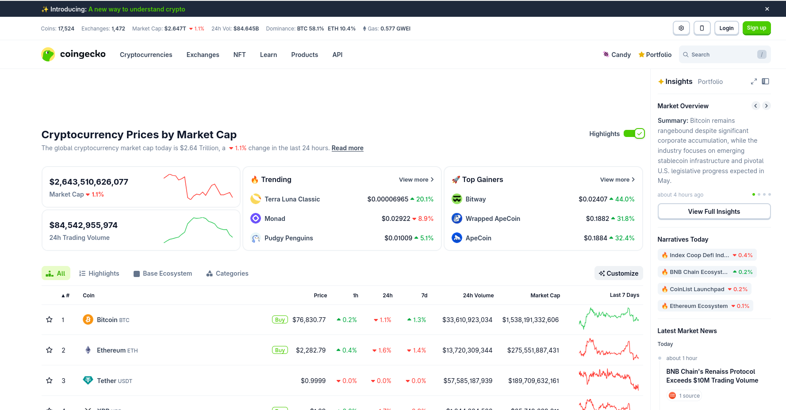

Ejercicio propuesto
ENUNCIADO
El objetivo de este ejercicio es introducir los fundamentos del procesamiento de datos en tiempo real mediante Spark Structured Streaming. Para ello, se emplea la API del servicio de criptomonedas CoinGecko, que permite obtener información actualizada sobre precios de activos digitales. Esta API se utiliza como fuente de datos para simular un flujo continuo de eventos, facilitando así la comprensión de los conceptos clave asociados al procesamiento de datos en streaming.
El ejercicio se estructura en dos partes principales: un productor que genera datos simulando un flujo de eventos a partir de la API de CoinGecko, y un consumidor que procesa estos datos en tiempo real utilizando Spark Structured Streaming. A través de esta práctica, se busca que los estudiantes adquieran habilidades para configurar pipelines de streaming, analizar datos en tiempo real y visualizar resultados de manera efectiva.

Imagen 1: Servicio coingecko
- Productor: Creación de los ficheros, configuración del streaming y generación de información. Disponible aqui
- Consumidor: Consumo de datos en tiempo real, análisis de los datos obtenidos y visualización de resultados.Disponible aqui
EJERCICIO
Una vez creado el proyecto Spark y comprobado que se crean y se consumen los datos en tiempo real, realiza los siguiente ejercicios:
- Añadir más criptomonedas a la lista
COINS. - Cambiar la moneda de referencia de
eurausd. - Calcular ventanas de 5 minutos en lugar de 1 minuto.
- Crear una alerta cuando el precio de Bitcoin supere un umbral definido.
- Guardar las métricas agregadas en Parquet en lugar de guardar los eventos originales.
- Añadir una columna
sourcecon valorcoingecko. - Comparar el número de eventos esperados con el número de eventos realmente procesados.